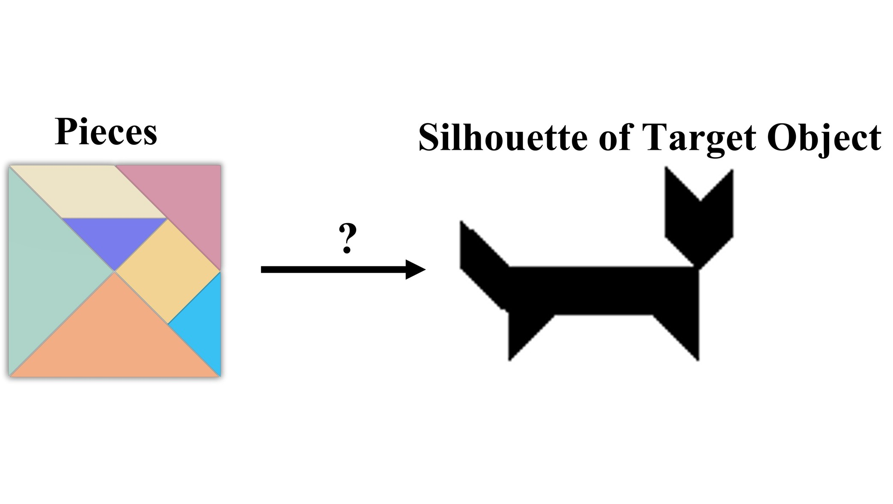

Chao Zhao
Assistant Professor, School of Artificial Intelligence, Jilin University
Email: czhaobb at connect dot ust dot hk
I received my Ph.D. from HKUST in 2025 (advisor: Prof. Qifeng Chen) and my Master’s from the University of Birmingham (advisor: Prof. Jeremy Wyatt).
My research explores learning-based robotic manipulation, including dexterous hands, tactile sensing, dual-arm coordination, and humanoid autonomy.
Recruiting: I welcome applicants for 1 Ph.D. and 2–3 Master’s positions per year. Please get in touch!
Updates
- June 2025: LTDOM accepted by T-RO
- May 2025: MrChaos accepted by ICRA 2025
- Apr 2023: ERRA accepted by RA-L
- Apr 2023: Flipbot accepted by ICRA 2023
- Dec 2022: Learn to Grasp via Intention Discovery accepted by RA-L
Research

Master Rules from Chaos
Learning to reason, plan, and interact from chaos for Tangram assembly
Teaching & Outreach
- Fall 2021: COMP4471 - Deep Learning in Computer Vision
- Spring 2021: IOTA5101 - Fog/Edge/Cloud Computing for IoT